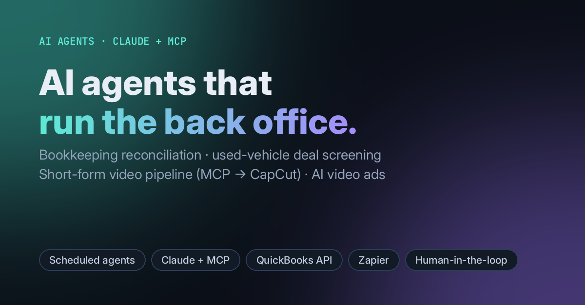

AI agents · Claude + MCP
AI Agents & Automations
Four agents built for real small-business work. Each one runs on a schedule or a trigger, does the repetitive part, and hands a short, reviewable result back to a person. None of them deletes, sends or files anything on its own.

- Bookkeeping reconciliation agent: matches bank statements to the QuickBooks ledger in widening date windows, reverses duplicates with journal entries, applies owner rules, quarantines anything unexplained, and checks year-end balances.
- Used-vehicle deal screener: watches marketplace alerts, screens each listing against resale-profit criteria, and texts only the deals worth a look.
- Short-form video pipeline: turns a one-line topic into an editable CapCut project. An MCP server writes the drafts, with captions, scene breaks and music placeholders.
- AI video ad generator: a reusable prompt workflow for 15-second vertical commercials, using shot lists, negative constraints and exact on-screen text.
ClaudeModel Context ProtocolPythonQuickBooks APIZapierScheduled tasksCapCut
View code on GitHub →